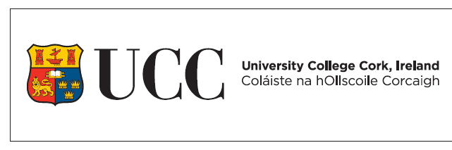
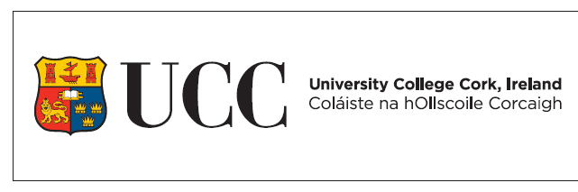

I spent 6 years studying in Gaelcholaiste Mhuire AG from first year to sixth year. During this time I completed my Junior and Leaving Certificate examinations with all honours, embarked upon multiple trips even abroad, participated in projects, completed Transition Year work-experience, was heavily engaged with sport and made great friends in the process. Please find in the table below my Leaving Certificate Results.
| Subject | Grade |
|---|---|
| Irish | H2 |
| English | H4 |
| Maths | H6 |
| French | H5 |
| Business | H4 |
| History | H3 |
Gaelcholaiste Mhuire AG is a majorly historic and traditional school founded in 1811 on the North Monastery Campus in which it still stands today. Renounced for its huge sporting, musical and particulary Irish routes its boasts highly academic and high achieving athletic graduates. It is a Gaelscoil and by nature students a required to study and learn through the Irish language in keeping with its great tradition. As a result I can now deem myself an acomplished Gaelgoir.
 

I have recently enrolled in University College Cork in the hope of completing a Business Information Systems level-8 Degree programme. One semester down and so far its been great. It has exceeded expectations in terms of my capabilities as a student and what I myself am capable of as a young learner. The wide range of facilities along with the trusted independence of a college student has allowed me to excel in my own progressive learning.
My exams to date in semester one were certainly a much different task than i encountered with the leaving cert. More continous assessment, multiple choice question exams were introduced and the final exams themselves were to be answered quite differently. So it is fair to say I found the first semester exams a little different but truly a great introduction into college academics and the BIS programme. I hope to continue to excel and optimise my learning ability over the course of the next three years whilst making the most of my time here on this prestigious campus.